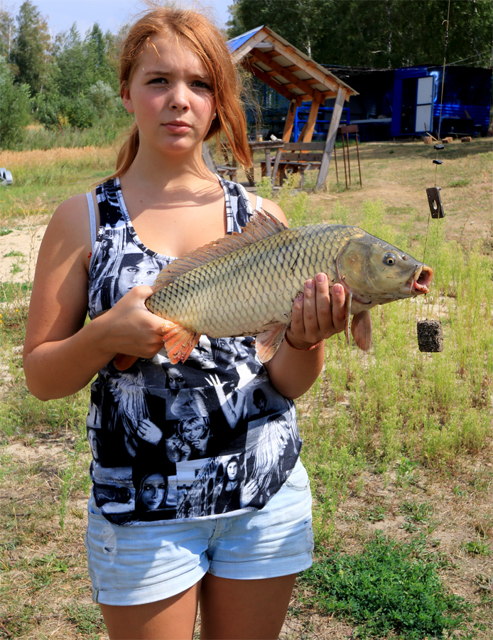
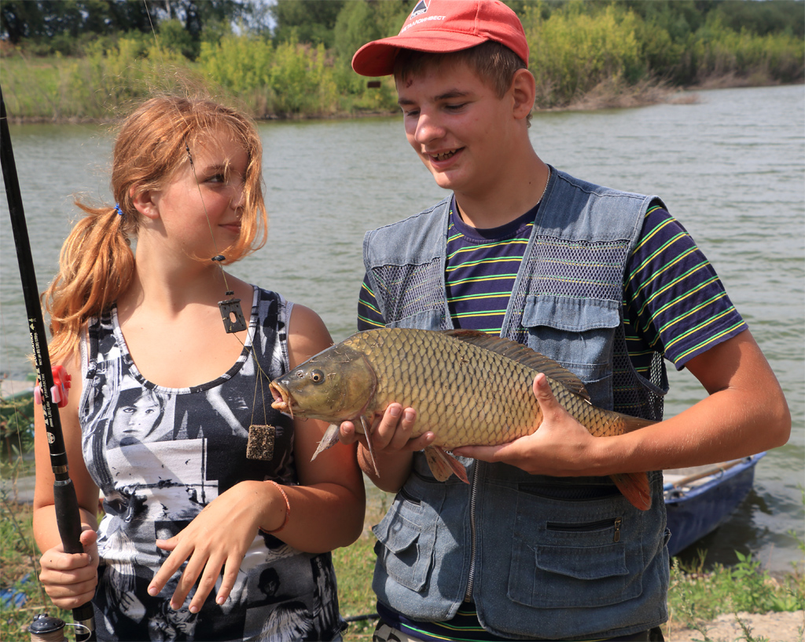
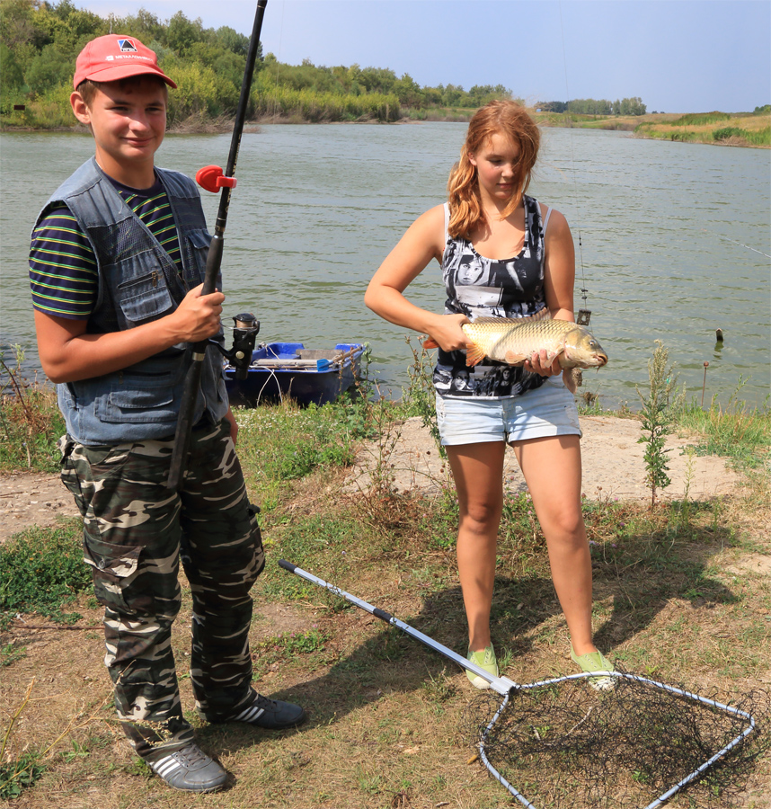
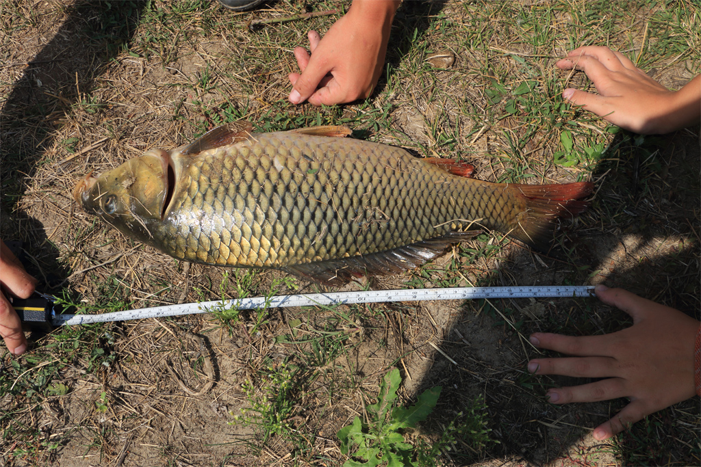
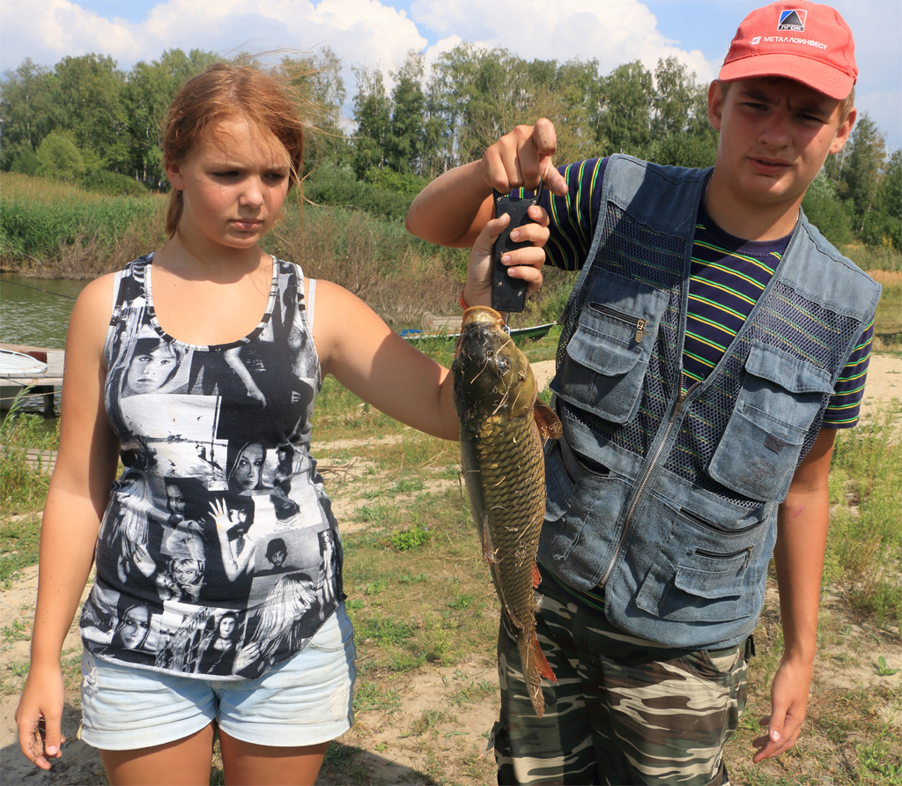
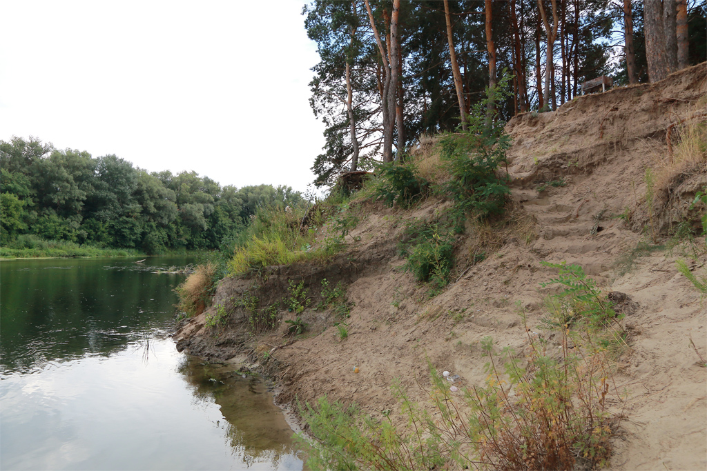
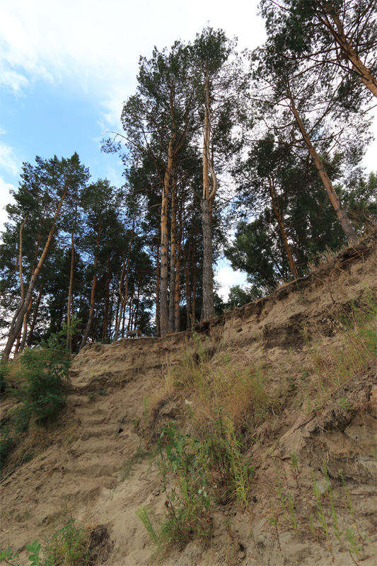

Трофей сезона
Это, конечно, не норвежская семга, но добыт этот трофей детскими руками, а значит все у нас еще впереди, все у нас получится.

Содобытчики рады удаче

Весь инструментарий налицо.

И традиционный процесс измерения дал приличные результаты:
длина - 57 см

вес - более двух кг

А в остальном на высоких берегах Хопра по-прежнему так же спокойно.

Ходят кони над рекою ищут кони водопоя.
А к речке не идут - больно берег крут.
